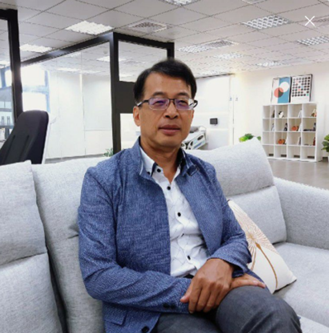

Distinguished Professor · Vice Dean
何信瑩 特聘教授 Shinn-Ying Ho
聯絡方式：syho@nycu.edu.tw
國立陽明交通大學 工程生物科學學院（共生院）特聘教授兼副院長、產業博士班主任
生物資訊及系統生物研究所 教授
研究橫跨智慧型演化演算法、大型參數最佳化、生物資訊、醫學影像與臨床 AI，並長期推動跨院資料合作與智慧醫療系統轉譯。
Current Role2026 秋季起
工程生物科學學院（共生院）副院長
工程生物科學學院（共生院）副院長
Google ScholarH-index 49
Global Impact全球前 2% 頂尖科學家
2021–2025
2021–2025
Academic Leadership台灣生物資訊及系統生物學會理事長
2022–2025
2022–2025